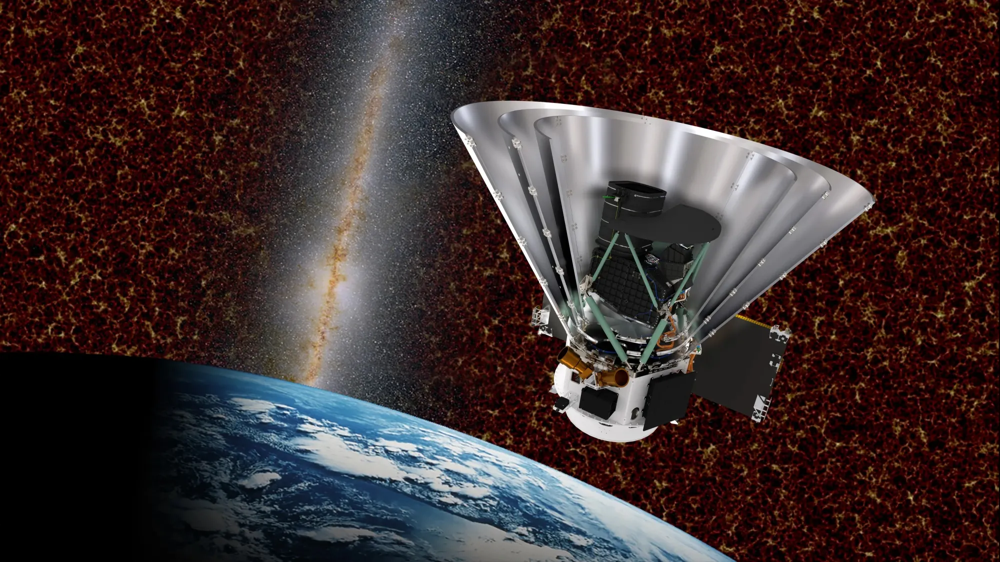

Evreni sorgula, bilinmeyeni keşfet.
Burası tamamen ''Ya şöyle olsaydı...'' diyenlere ait.
Fikirlerini genişlet, teorilerini yürüt ve evrenle dans et!
Mart 2025'te fırlatılan SPHEREx, gökyüzünü hem optik hem de kızılötesi ışıkta inceleyebilen uzay gözlemevidir.
Evrenin ilk anlarındaki kozmik şişmeyi (inflation) inceleyecek,
450 milyondan fazla galaksinin ve Samanyolu'ndaki 100 milyondan fazla yıldızın 3 boyutlu haritasını çıkaracak,
yıldız ve gezegen oluşum bölgelerinde su, karbondioksit ve metanol gibi yaşamın yapı taşı olan buz ve moleküllerin dağılımını araştıracak.
Peki sizce bu büyüleyici icat bugüne kadar neler keşfetmiştir?

SPHEREx Görseli
Merakının Sınırlarını Zorlamaya Hazır Mısın?